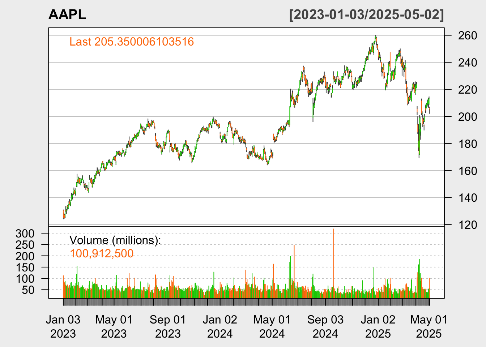
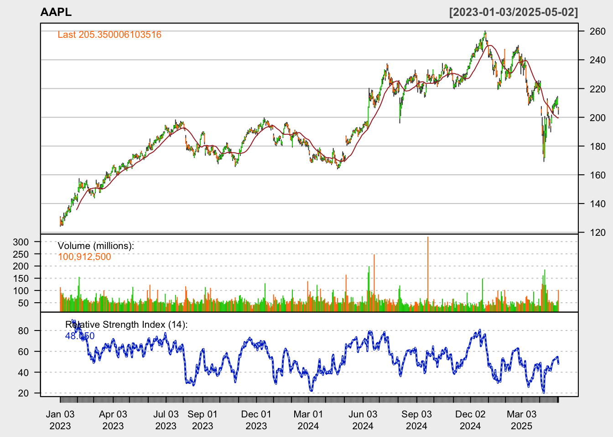
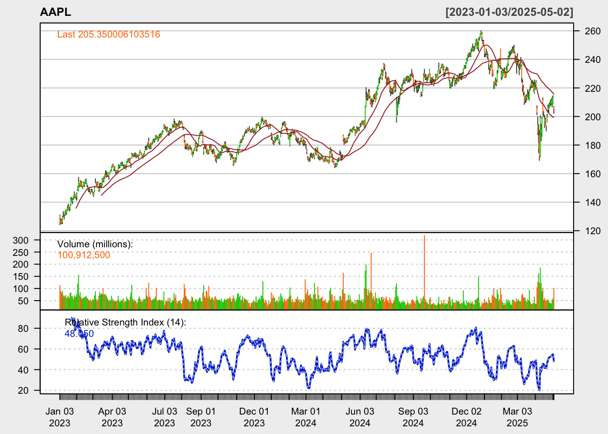
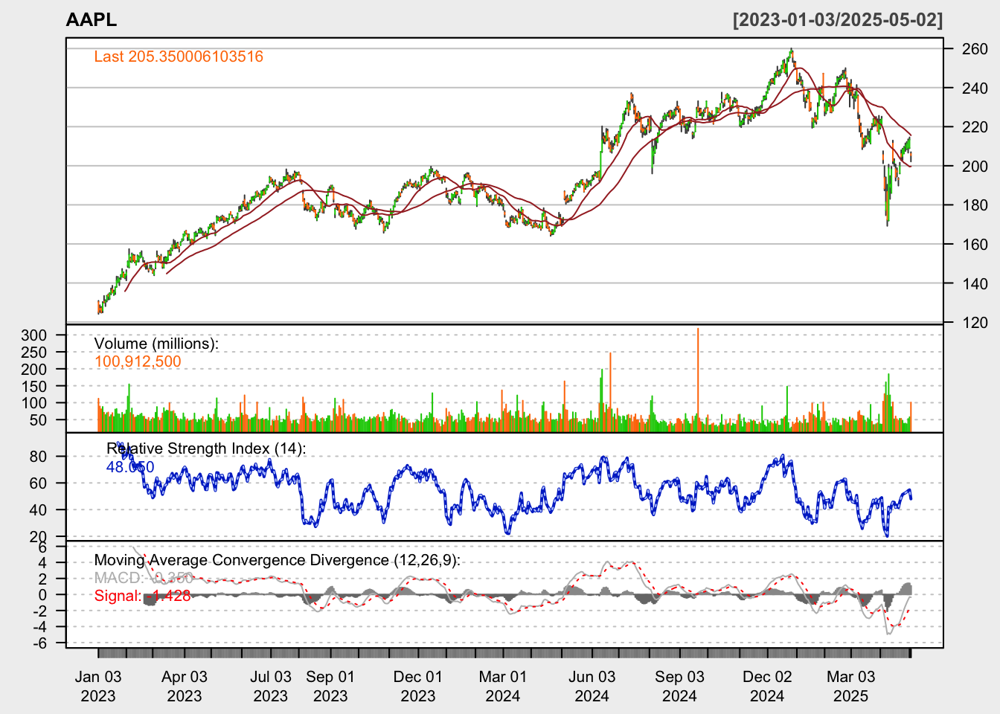
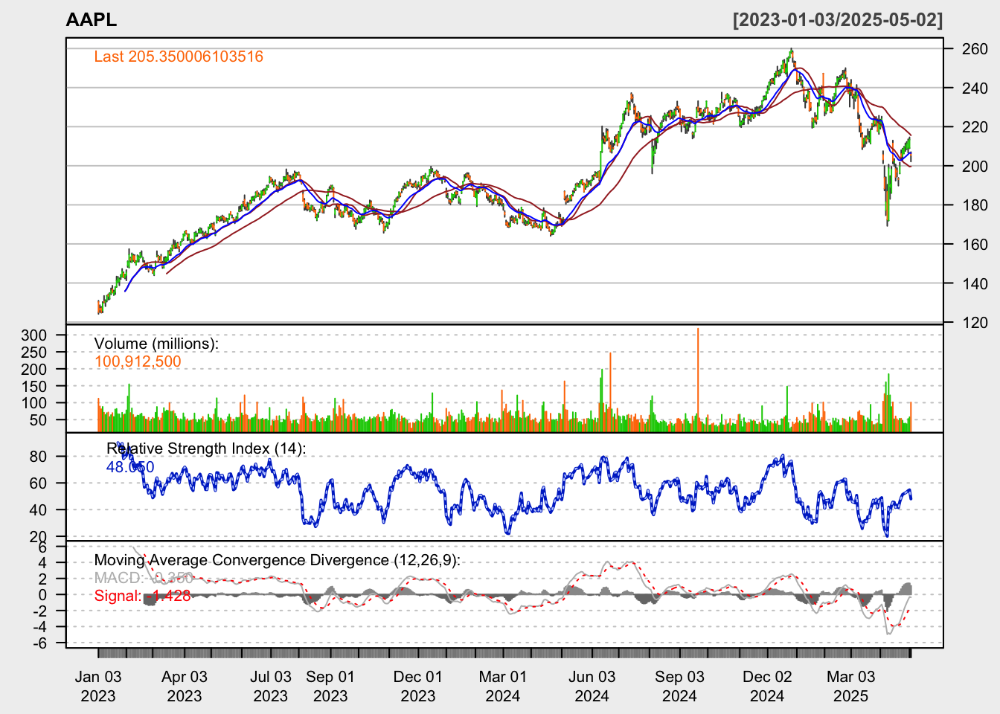

Stock Market Analysis Phase 1
Duarte Da Silva
2025-04-27
📈 Trade Signal Generator Using MACD + RSI
A modular R function that scans for bullish/bearish entry setups in any stock
Introduction
This project was built to simulate how a technical trader might use MACD and RSI conditions — in combination with price positioning — to evaluate entry signals. I coded each condition check manually using R, and wrapped the logic in modular functions for long-term usability.
This is a personal passion project I set out to do as a complimentary assignment to apply the knowledge learned on the Datacamp track Introduction to R for Finance, my objectives for today are the following:
- Write down important theory notes
- Pull Stock Data
- Plot a Candlestick Chart
- Calculate Indicators
- Plot indicators
- Risk Management Function
- Wrap up Day 1.
Day 1 Sunday, April 27th
Market Theory Notes (for Phase 1)
1. Supply and Demand
Technical Definition:
Markets move because of changes in supply (how much of something is available) and demand (how much people want it).
If demand > supply, prices rise (buyers fight for limited supply).
If supply > demand, prices fall (too much of something, buyers become picky).
Simple Example:
Imagine there are only 3 ice cream cones at the playground, but 10 kids want one. Kids will start offering more and more to get one — price goes up!
But if there are 100 ice cream cones and only 3 kids, the cones sit around — prices drop because nobody is desperate.
2. Catalysts
Technical Definition:
A catalyst is an event that suddenly increases supply or demand.
Examples:
Earnings Reports: Company profits higher than expected → more buyers.
News Events: New product launch, lawsuit, scandal, CEO resigns.
Economic Reports: Inflation data, employment rates, interest rate hikes.
Simple Example:
Imagine if you’re selling lemonade. Suddenly it’s a hot day and everyone’s thirsty — BOOM, everyone wants your lemonade = catalyst. Or if it starts raining and people run home — nobody buys lemonade = bad catalyst.
3. Types of Orders
Technical Definition:
Traders use different kinds of orders to control how and when they buy or sell:
Market Order: Buy/sell immediately at current price.
Limit Order: Buy/sell only if price reaches a specific number.
Stop Order: Trigger a buy/sell when price passes a threshold.
Simple Example:
Market Order = “I want a toy NOW, I’ll pay whatever the price is.”
Limit Order = “I’ll only buy the toy if it’s $10 or less.”
Stop Order = “If the toy’s price falls to $5, tell me and I’ll buy it.”
4. Risk Concepts
Technical Definition:
Position Sizing: Deciding how much of your money you put into a single trade.
Stop Loss: A pre-set rule that closes your trade if you lose too much money.
Risk per Trade: How much (%) of your total account you are willing to risk on one bet.
Key rules:
Good traders risk only 1–2% of their money per trade.
Stop Losses protect you from devastating losses.
Simple Example:
Imagine you have 100 dollars.
You say, “I’ll only bet 2 dollars on this game of rock-paper-scissors.”
If you lose, you lose 2 dollars — no big deal.
If you lose 10 games, you still have 80 dollars left.
Without rules, you could lose all your money in one bad bet!
1. Pulling Stock Data & Plotting Charts
# You can search a specific timeframe with the following syntax:
getSymbols("AAPL", src = "yahoo", from = "2023-01-01")## [1] "AAPL"# Plot candlestick chart
chartSeries(AAPL, theme = chartTheme("white"))
# Add Indicators
# 1. RSI
addRSI(n = 14) # 14 is the standard period for RSI
# 2. SMA20 & SMA50
addSMA(n = 20)
addSMA(n = 50)
# 3. MACD
addMACD(fast = 12, slow =26, signal = 9, type = "EMA")
# 4. EMA (Optional)
addEMA(n = 20) 
Creating a function()
The function() is a machine or function that takes inputs, performs an operation with them based on instructions and gives you an output, for example:
function_name <- function(inputs) {
# Code to process the inputs
# Output (usually with return())
}function_name – the name for your machine.
<- function(inputs) – Tell R you’re creating a function and list what information it needs.
{} Write instructions for your machine.
Simple Example
say_hello <- function(name) {
message <- paste("Hello", name)
return(message)
}
say_hello("Oscar")## [1] "Hello Oscar"- Name is the input.
- The function builds a message using paste().
- return() sends the message back to you.
- paste() combines inputs into a text string.
- Using return() is necessary for R to print the result.
2. Calculating position size
# 1. Calculate position size
calculate_position_size <- function(account_balance, risk_percent, stop_loss_percent) {
# 2. Calculate $ amount to risk per trade
dollar_risk <- account_balance * (risk_percent / 100)
# 3. Calculate position size
position_size <- dollar_risk / (stop_loss_percent / 100)
return(list(
position_size = position_size,
dollar_risk = dollar_risk
))
}account_balance = total money you have in your account (e.g., $10,000).
risk_percent = how much % of your account you are willing to lose in one trade (e.g., 1%).
dollar_risk = the exact amount of real $ you are willing to lose. i. e: 500 * (1/100) so 500 * 0.01 = 5.
position_size = The amount of stock youre buying in the operation, i. e: 5 / (2/100) so 5 / 0.02 = 250, meaning you can fit the value “0.02” 250 times in the number 5.
stop_loss_percent = how far away your stop loss is from entry price (e.g., 2%).
Test Cases
# Test Case 1
calculate_position_size(500, 1, 2)## $position_size
## [1] 250
##
## $dollar_risk
## [1] 5# Test Case 2
calculate_position_size(50, 2, 5)## $position_size
## [1] 20
##
## $dollar_risk
## [1] 1# Test Case 3
calculate_position_size(5000, 1, 1.5)## $position_size
## [1] 3333.333
##
## $dollar_risk
## [1] 50# Test Case 4
calculate_position_size(25000, 0.5, 3)## $position_size
## [1] 4166.667
##
## $dollar_risk
## [1] 125Wrapping up Day 1
Today I learned to:
Use getSymbols() function to import data from Yahoo finance.
Use chartSeries() and addSMA(), etc to plot charts and add indicators such as: SMA, EMA, MACD and RSI.
Build a function to calculate the dollar risk and position size of a possible trade.
Day 2 Monday, April 28th
3. Building Trade Signal Detection Function
The objective for day two is to build a function that:
- Suggests possible trade setups.
- Detects if stock is near Support/Resistance levels based on SMA.
- Confirms entry signal guided by a trigger combo of RSI and MACD.
- Calculates position size & possible $ loss.
To build this function im going to complete the next steps:
- Pull the stock data
- Calculate Indicators
- Create a Trade Setup Logic
- Confirm with RSI and MACD
- Create Output
RSI_MACD_combo <- function(ticker) {
library(quantmod)
# 1. Pull Stock Data
stock_data <- getSymbols(ticker, from = "2024-04-28", auto.assign = TRUE)
stock_data <- get(ticker)
# 2. Calculate indicators and save them as objects
sma20 <- SMA(Cl(stock_data), n = 20)
sma50 <- SMA(Cl(stock_data), n = 50)
rsi14 <- RSI(Cl(stock_data), n = 14)
macd_vals <- MACD(Cl(stock_data))
# 3. Build condition checks
close_today <- as.numeric(last(Cl(stock_data)))
# 4. Today's SMA values
sma20_today <- as.numeric(last(sma20))
sma50_today <- as.numeric(last(sma50))
## Absolute difference between closing price and SMA
diff_sma20 <- abs(close_today - sma20_today)
diff_sma50 <- abs(close_today - sma50_today)
## Calculate percentage difference relative to SMA
perc_diff_sma20 <- diff_sma20 / sma20_today
perc_diff_sma50 <- diff_sma50 / sma50_today
## Check if the percentage difference is less than 2%
near_sma20 <- perc_diff_sma20 <= 0.02
near_sma50 <- perc_diff_sma50 <= 0.02
## Combined condition: near ANY SMA
near_any_sma <- near_sma20 | near_sma50
## Print both SMA condition results
print(near_sma20)
print(near_sma50)
# 5. Today's RSI value
rsi_today <- as.numeric(last(rsi14))
## Check RSI conditions
rsi_buy_signal <- rsi_today < 30
rsi_sell_signal <- rsi_today > 70
## Print results
print(rsi_today)
print(rsi_buy_signal)
print(rsi_sell_signal)
# 6. MACD cross detection
# WHAT YOU WANT TO CHECK:
## Buy signal: when MACD crosses above signal line.
## Sell signal: when MACD crosses below signal line.
## Extract MACD line and Signal line separately
macd_line <- macd_vals[, 1]
macd_signal <- macd_vals[, 2]
## Get today's and yesterday's values
macd_today <- as.numeric(last(macd_line))
signal_today <- as.numeric(last(macd_signal))
macd_yesterday <- as.numeric(last(macd_line[nrow(macd_line) - 1]))
signal_yesterday <- as.numeric(macd_signal[nrow(macd_signal) - 1])
## Check if a bullish crossover happened
macd_bullish_cross <- (macd_yesterday < signal_yesterday) & (macd_today > signal_today)
## Check if a bearish crossover happened
macd_bearish_cross <- (macd_yesterday > signal_yesterday) & (macd_today < signal_today)
## Print results
print(macd_bullish_cross)
print(macd_bearish_cross)
# 7. Build Trade Desicion Logic
if(near_any_sma & rsi_buy_signal & macd_bullish_cross) {
trade_signal <- "LOOK INTO"
} else if (near_any_sma & rsi_sell_signal & macd_bearish_cross) {
trade_signal <- "LOOK INTO"
} else {
trade_signal <- "NO ACTION"
}
sma_20_signal <- near_sma20
sma_50_signal <- near_sma50
any_sma_signal <- near_any_sma
# Final Output
print(paste("Ticker:", ticker))
print(paste("Trade Recommendation:", trade_signal))
print(paste("Price is near SMA 20:", near_sma20))
print(paste("Price is near SMA 50:", near_sma50))
print(paste("Today's Close:", round(close_today,2)))
print(paste("RSI Today:", round(rsi_today)))
return(trade_signal)
}RSI_MACD_combo("META")## [1] FALSE
## [1] FALSE
## [1] 60.39128
## [1] FALSE
## [1] FALSE
## [1] FALSE
## [1] FALSE
## [1] "Ticker: META"
## [1] "Trade Recommendation: NO ACTION"
## [1] "Price is near SMA 20: FALSE"
## [1] "Price is near SMA 50: FALSE"
## [1] "Today's Close: 597.02"
## [1] "RSI Today: 60"## [1] "NO ACTION"Wrapping Up Day 2
Click to expand: Trade Signal Explanation
Trade Signal Function Progress
Today I spent most of my time working on the Trade Signal Function, which I named RSI_MACD_combo. I’m documenting this process to review my work and make sure I understand every part of it as I continue to build and evolve the function.
The goal of this function is simple: ➡️ Use RSI and MACD triggers to suggest potential trade signals.
Step 1: Pulling the Data I used getSymbols() to pull data directly from Yahoo Finance. To make the function dynamic and reusable, I used a ticker input instead of hard-coding any stock names. The pulled data is stored as stock_data:
stock_data <- getSymbols(ticker, from = “2024-04-28”, auto.assign = FALSE)
Step 2: Adding Indicators I calculated all indicators based on the stock’s closing prices, using:
SMA() for the 20- and 50-day moving averages,
RSI() for momentum signals (14-day),
MACD() for crossover detection.
These all used the Cl() function to extract closing prices from the stock data.
Step 3: Getting Today’s Values To check current market conditions, I used last() and as.numeric() to store today’s key values:
close_today <- as.numeric(last(Cl(stock_data))) sma20_today <- as.numeric(last(sma20)) sma50_today <- as.numeric(last(sma50))
Step 4: Distance from SMA Check I used abs() to calculate the absolute difference between the closing price and each SMA. Then I calculated the percentage difference to define whether the price is “near” either moving average. I considered within 2% to be “close.”
Step 5: RSI Signal I grabbed today’s RSI value using:
rsi_today <- as.numeric(last(rsi14)) Then I defined:
RSI below 30 = potential buy signal
RSI above 70 = potential sell signal
Step 6: MACD Crossover I separated the MACD line and Signal line from the MACD output, then built two condition checks:
Bullish Cross = MACD crosses above signal line
Bearish Cross = MACD crosses below signal line
This helps identify momentum shifts in price action.
Step 7: Trade Decision Logic Once I had all the indicators and condition checks in place, I built the actual decision logic.
The function checks:
Is the price near either SMA?
Is there a buy/sell signal from RSI?
Is there a MACD crossover confirming that signal?
If all conditions align, the function returns “LOOK INTO”, along with:
The ticker,
The RSI reading,
The closing price,
Which SMA the price is closest to.
This project is helping me improve both my R syntax and my ability to think like a data-driven trader. Every time I rebuild a piece of the function, I understand it a little better — and I’m excited to keep refining it over the next few days.